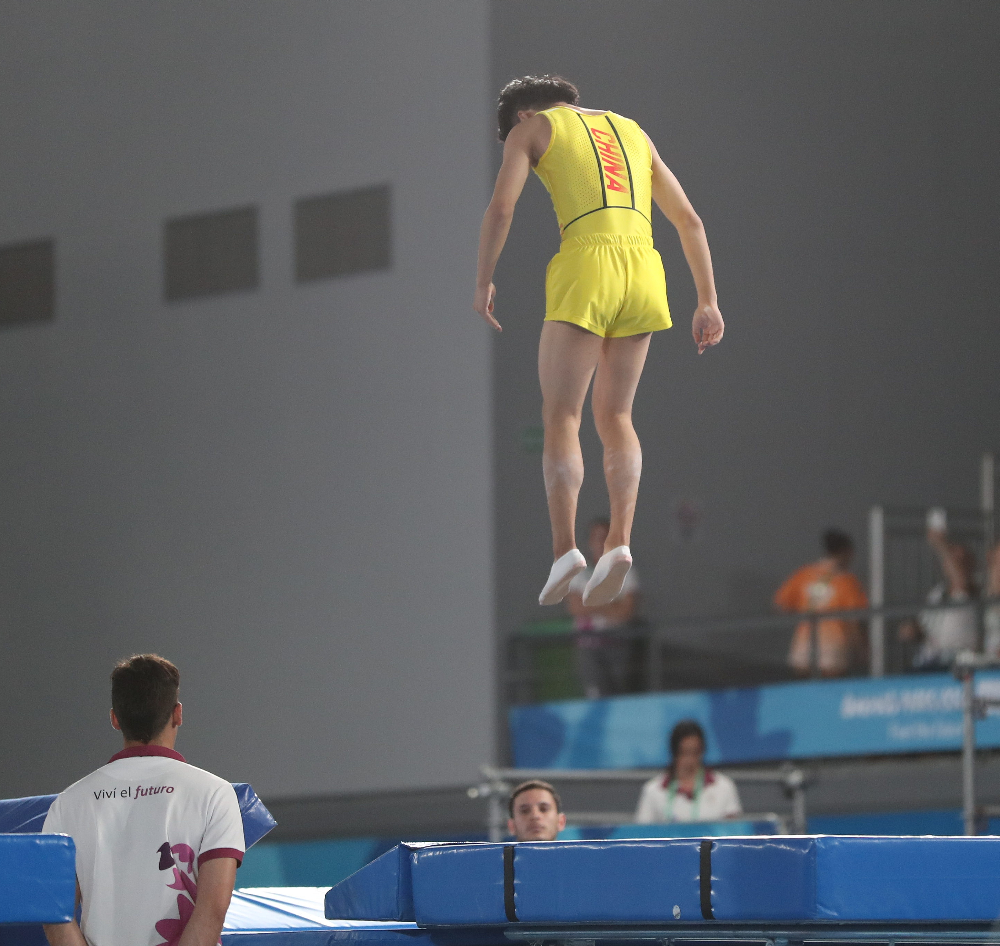
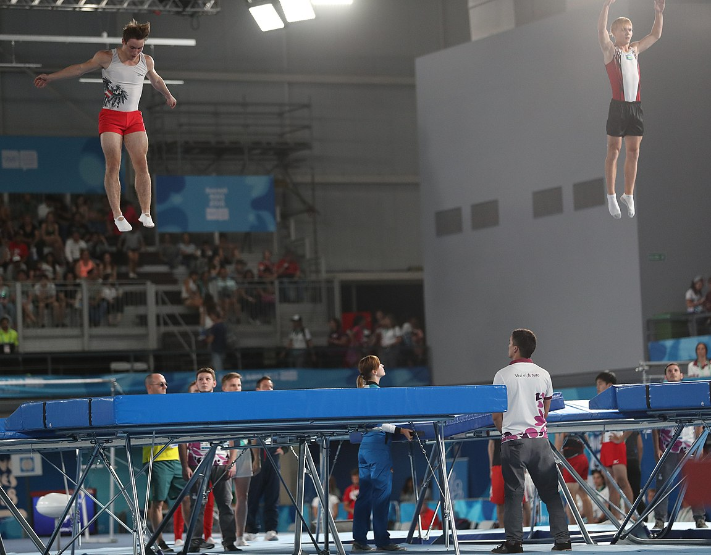
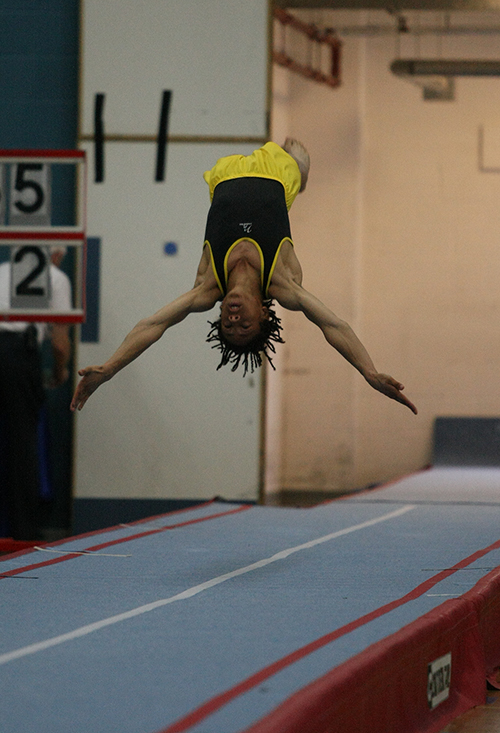

Trampoline Gymnastics
Trampoline gymnastics is a thrilling and challenging sport that involves performing acrobatic routines on a trampoline. It requires a high degree of skill, strength, and coordination, and is typically practised by athletes of all ages and levels of experience. In trampoline gymnastics competitions, athletes showcase their abilities through jumps, flips, and twists, while aiming to achieve the highest possible scores from judges. Trampoline gymnastics is a popular sport that provides an exciting and dynamic experience for both participants and spectators alike.
Individual
The individual category in trampoline gymnastics is a competition where one athlete performs a routine on the trampoline. The routine is judged based on the difficulty of the skills performed, the execution of those skills, and the overall performance. The athlete has a set amount of time to complete their routine, usually around 60 seconds. The goal is to perform as many skills as possible within that time while maintaining control and proper form. It is a challenging and exciting event to watch and requires a high level of skill and athleticism from the competitors.

Synchronised
The synchronized category in trampoline gymnastics is a competition where two athletes perform a routine on the trampoline together. The routine is judged based on the synchronization of the athletes, the difficulty of the skills performed, the execution of those skills, and the overall performance. The athletes have a set amount of time to complete their routine, usually around 60 seconds. The goal is to perform as many skills as possible within that time while maintaining control and proper form, all while being in sync with your partner. It is an impressive display of teamwork, coordination, and athleticism.

Double Mini
Double Mini is a smaller trampoline that is used for a different type of gymnastics competition. Athletes perform a running start before bouncing on the trampoline and doing a series of flips and twists before landing on a mat. The difficulty of the skills is judged, as well as the execution and landing of each skill. It is an exciting event to watch and requires a lot of strength and coordination from the athletes.

Tumbling
Tumbling in trampoline gymnastics refers to the series of acrobatic movements performed on a long tumble track. It involves a combination of flips, twists, and somersaults that require a great deal of skill, strength, and coordination. Tumbling is a popular event in trampoline gymnastics competitions and is judged based on the difficulty, execution, and overall presentation of the routine. It is a thrilling and exciting aspect of trampoline gymnastics that showcases the athleticism and artistry of the gymnasts.

How Trampoline Gymnastics is Judged
Trampoline gymnastics is judged based on several factors such as the height of the jumps, the execution of tricks and flips, and the overall difficulty of the routine. Judges also look for good form and technique, as well as the athlete's ability to maintain control and precision throughout their routine. Scores are awarded based on a combination of these factors, and the athlete with the highest overall score is declared the winner. It takes a lot of hard work and practice to master trampoline gymnastics, but the rewards are well worth it. For more rules on Trampoline Gymnastics, check out their code of points!